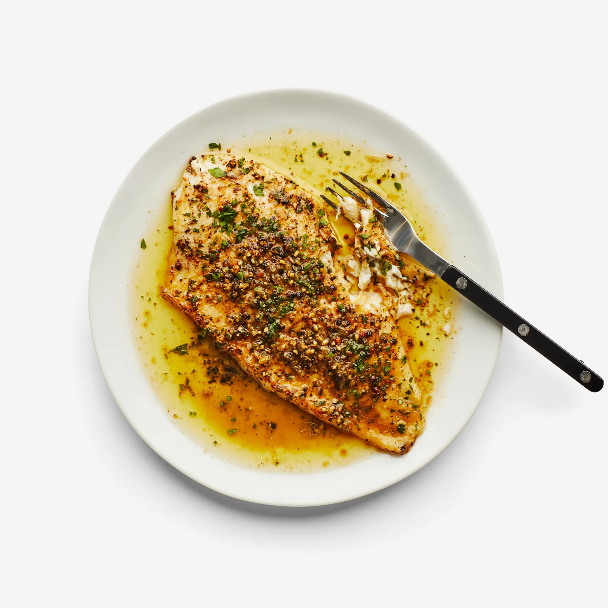

Main Menu
Butteriest Black Pepper Fish

Barely cracked peppercorns toasted, almost fried, in a generous amount of butter create one of the easiest, best finishers for seared fish. The black pepper’s piercing heat fizzles down to reveal warm, leathery, fruit-like flavors, a good reminder that black pepper is much more than just a default seasoning. We love the Zanzibar and Robusta peppercorns from Burlap & Barrel. On the topic of fish, any thin fillets of white fish that catch your fancy will do well here—sole, turbot, even snapper.
Ingredients
- 2 tsp. black peppercorns
- 3 Tbsp. all-purpose flour
- 2 4-oz. skinless flounder fillets
- ½ tsp. freshly ground pepper
- 2 tsp. Diamond Crystal or 1 tsp. Morton kosher salt, divided
- 1 Tbsp. vegetable oil
- 6 Tbsp. unsalted butter, cut into pieces
- 1 Tbsp. finely grated lemon zest
- 2 Tbsp. fresh lemon juice
- Finely chopped parsley (for serving)
Preparation
- Coarsely crush 2 tsp. black peppercorns with a mortar and pestle or place on a work surface and crush with a heavy skillet; set crushed pepper aside.
- Place 3 Tbsp. all-purpose flour in a shallow bowl. Sprinkle two 4-oz. skinless flounder fillets on both sides with ½ tsp. freshly ground pepper (this is not the reserved pepper you just crushed) and 1½ tsp. Diamond Crystal or ¾ tsp. Morton kosher salt. Working one at a time, dredge fillets in flour, shaking off excess.
- Heat 1 Tbsp. vegetable oil in a large nonstick skillet over medium-high. Cook fish, undisturbed, until golden underneath, about 2 minutes. Carefully turn over with a spatula and cook on the other side just until cooked through, about 30 seconds. Transfer each fillet to a plate.
- Wipe out skillet. Combine 6 Tbsp. unsalted butter, cut into pieces, and reserved crushed pepper in pan and cook over medium-low heat, swirling pan occasionally, until butter foams, then browns (be careful not to let it burn), 5–8 minutes; remove from heat. Stir 1 Tbsp. finely grated lemon zest and 2 Tbsp. fresh lemon juice and remaining ½ tsp. Diamond Crystal or ¼ tsp. Morton kosher salt into butter.
- Immediately spoon sauce over fish and top with finely chopped parsley.
Main Menu